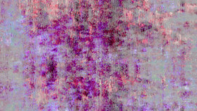

Panchromes I-III
T. Marie – USA 2014
15 min – HD – no dialogues
Sc+P: T. Marie
“The PANCHROME SERIES expands upon a process of cameraless image making that fuse together methodologies from both painting and film. I term this process ‘time based pixel painting’, as it uses the intrinsic properties of the pixel, such as RGB channels and Luminacne channels, as a painter would use pigment and medium. Taking it’s queue from the greek roots that comprise the title, PANCHROME, I, II, III aggressively explores a panoply of hues and digital mark-making through the medium of time.” – T. Marie
tuesday 13 oct 10.30 pm werkstattkino
T. Marie was born in Las Vegas, Nevada. She is an Assistant Professor at Masschusetts College of Art and Design. She received a BFA in Film, Animation, Video at the Rhode Island School of Design and an MFA in Film and Video at the Milton Avery Graduate School of the Arts at Bard College. T. Marie is a filmmaker and transdisciplinary artist. She is best known for developing a process of moving image making, she terms, time-based pixel painting and time-based pixel drawing.
Films (selection) Optra Field III – IV 2009 – 010101 2010 – Water Lilies 2011 – Slave Ship 2011 – Optra Fields V – IX 2012 – Panchromes I-III 2014